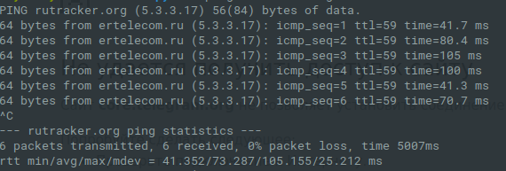

Добрый вечер! Долгое время пользовался вашим сервисом на Windows, всё было круто!
Теперь необходимо настроить на Linux (elementary os)
При импорте в network manager, сайты не открываются вообще, при установленных галках “использовать только внутри этой сети” в ipv4 и ipv6 открываются сайты, но провайдер перехватывает запросы. Провайдер Дом.ру (ertelecom).
Я в Linux новичек. Прошу помощи. Как настроить, чтобы всё заработало? Как импортировать, какие конфигурации использовать?
Заранее спасибо за ответ!
2019-10-19T17:47:38.235Z
ValdikSS
Достаточно скачать ZIP-архив с конфигурацией, импортировать его через NetworkManager, в настройках соединения, в маршрутах IPv4 установить галочку “use only for resources on this connection”, и должно заработать.
2019-10-20T10:09:45.592Z
mindxaker
Я сделал всё, как вы описали. Заблокированные сайты не открываются, всё остальное открывается как обычно.
Скриншоты

2019-10-20T12:54:36.725Z
ValdikSS
Видимо, у вас настройки DNS не применяются. Проверьте содержание /etc/resolv.conf. Подозреваю, что у вас используется какой-то кеширующий сервер (либо dnsmasq, либо systemd-resolved), и либо он закешировал старую запись для rutracker.org (чтобы это проверить, попробуйте зайти на какой-то другой заблокированный сайт, на который еще ни разу за последние сутки не заходили), либо он не применяет настройки DNS из VPN.
2019-10-20T13:16:24.035Z
mindxaker
Попробовал зайти на новый сайт. Опять провайдерская заглушка. Можно ли как-то заставить применять настройки DNS из VPN?
Содержание /etc/resolv.conf
Generated by NetworkManager
nameserver 127.0.0.53
2019-10-20T13:24:40.596Z
ValdikSS
По всей вероятности, у вас systemd-resolved, а он сломан в Ubuntu.
Попробуйте советы вроде этого, или какие-то другие советы из этой темы.
Также можно просто отключить systend-resolved, в файле /etc/NetworkManager/NetworkManager.conf должна быть директива вроде dns=что-то, попробуйте её закомментировать и перезапустить NetworkManager: sudo systemctl restart network-manager.
2019-10-20T13:36:55.168Z
mindxaker
Огромное спасибо!
Директивы dns в /etc/NetworkManager/NetworkManager.conf не оказалось, но я попробовал совет, по той ссылке и всё заработало
2019-10-20T13:52:01.657Z
vpetrigo(Vladimir Petrigo)
Оставлю для истории:
• в Fedora 33 для того, чтобы Antizapret VPN успешно заработал необходимо было выполнить команду описанную здесь. Больше информации, зачем это нужно, можно почерпнуть в официальной документации systemd.
2021-03-17T10:16:39.850Z
vpetrigo(Vladimir Petrigo)
По описанию в файле antizapret-tcp.ovpn:
##### NOTE TO LINUX USERS #####
# OpenVPN does not handle DNS on Linux.
# This also applies to ROUTERS.
#
# You have two workarounds:
# 1. Configure OpenVPN connection using NetworkManager.
# This is preferrable method.
# 2. Uncomment the lines below
# For Debian, Ubuntu and derivatives:
#
# script-security 2
# up /etc/openvpn/update-resolv-conf
# down /etc/openvpn/update-resolv-conf
#
# For Fedora:
#
# script-security 2
# up /usr/share/doc/openvpn/contrib/pull-resolv-conf/client.up
# down /usr/share/doc/openvpn/contrib/pull-resolv-conf/client.down
Часть, касающаяся Fedora, похоже, должна быть обновлена, так как client.up и client.down файлы в указанной директории не являются исполняемыми.
Также наблюдение в Fedora 33: при импорте конфигурации в NetworkManager, up/down директивы, похоже, игнорируются, так как отладочные записи из этих скриптов в системном журнале не появляются при подключении/отключении VPN. ¯_(ツ)_/¯
При запуске через командную строку openvpn --config antizapret-tcp.ovpn, скрипты корректно выполняются, но заблокированные сайты не открываются, хотя ip-forward и masquerade в системе разрешены.
2021-03-17T12:42:48.444Z
yurikfm
всем привет.
есть на сегодня гайд на запуск в линуксе?
по аналогии с виндой,поставил OpenVPN на линукс и …
интернет блокируется.
2021-12-03T22:24:25.714Z
ValdikSS
Смотрите сообщения выше и проверяйте настройку DNS.
2021-12-04T20:57:02.039Z
yurikfm
ну я не настолько продвинутый линуксоид.может со временем сумею прочитать много букв про DNS.
2021-12-05T15:42:50.746Z
yuriko1158
это я же,yurikfm.почту удалил.пришлось по новой зарегистрироваться.
так вот.
я выполнил команду:
VPN заработал,открыл сайт kinovod.net.но стоило открыть nnmclub,как всё отрезало.
видимо пошла блокировка.так как теперь при подключении VPN вообще ничего не открывается.
печально.
,
Настройка DNS в Linux зависит от используемого демона кеширования и дистрибутива. См. документацию к вашему дистрибутиву.
2021-12-08T22:26:08.811Z
yuriko1158
я остановил и отключил systemd-resolved.поставил nameserver от Google.
почти уже работает,верстка сайта nnmclub ломается.
kinovod и filmix вроде работает.
теперь осталось найти что мешает …
2021-12-09T23:53:55.696Z
unxed(Unxed)
Сделал так, теперь открываются только не заблокированные сайты, а заблокированные не открываются. Linux Mint 20.3 Una x64 MATE
В Mint 21 (на базе Ubuntu 22.04) перестало соединяться. Ошибка в логе: «ca md too week». Решение: в файле /etc/NetworkManager/system-connections/antizapret-tcp.nmconnection
после строчки
[vpn]
добавить:
tls-cipher=DEFAULT:@SECLEVEL=0
И потом выполнить
nmcli connection reload
Проблемы с openssl, ждать когда пофиксят.
З.Ы. В debian bullseye таких проблем нет.
2022-08-09T02:26:43.406Z
anon94384997
В Ubuntu 22.04 OpenSSL 3.0, а Debian Bullseye на год старее и там OpenSSL 1.1.1.
Версия 3.0 принесла новые несовместимости. Пока ее используют только новые Debian (соответственно Ubuntu) и Fedora. Даже в роллинговом Арче еще 1.1.1.
2022-08-09T04:29:23.278Z
filkint(Filkint)
Совершенно верно, я просто поленился подробно расписывать проблему…
2022-08-09T05:18:50.565Z
ValdikSS
Это не проблема OpenSSL и исправлять её не будут.
CA-сертификат АнтиЗапрета использует подпись sha1, что считается небезопасно стандартными настройками части дистрибутивов.
2022-08-09T16:47:59.355Z
filkint(Filkint)
Да, я читал про это, тогда решения проблемы не существует?